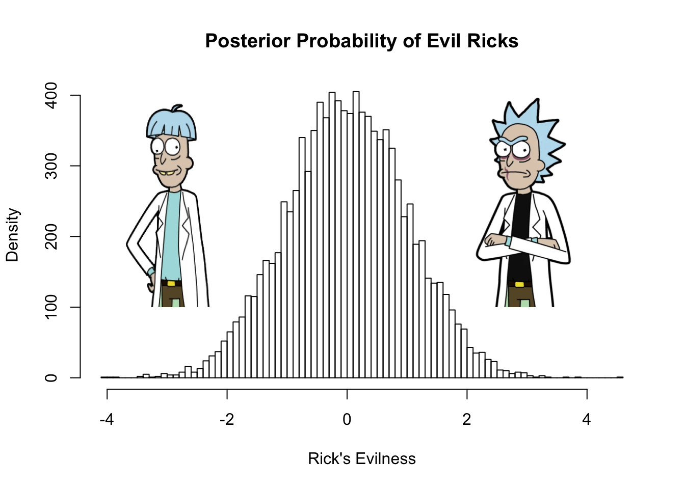
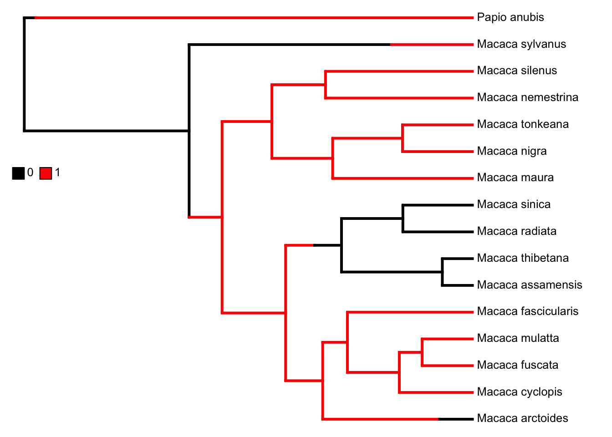

7 Ancestral State Reconstruction I
This chapter will take you through the code we can use to run ancestral state reconstruction with categorical characters. As always, remember to begin by setting your working directory to wherever you have saved the data files.
7.1 Data
The first thing we need to do is load some data. When you’re doing this, you need to keep in mind that you should keep your workspace as well organised as possible. In practice, this means giving things good names. “RicksDataV1.1” is not a great name depending on how many datasets you want in there. Neither is “data1” if you plan on having multiple datasets (which we do). So give your data object, and all other objects, simple, useful names. My personal preference is to use the name of the group but whatever works is fine. You need to be able to keep track of everything.
In your environment panel there should be a data frame with 16 observations of 2 variables. This command will show us the top 6 rows of data. It’s helpful to have a quick look and see R has loaded what we expected. In this case our data contains 15 species of macaque and one species of baboon alongside data regarding whether they exhibit sexual swellings or not (1/0).
species swelling
1 Macaca_arctoides 0
2 Macaca_assamensis 0
3 Macaca_cyclopis 1
4 Macaca_fascicularis 1
5 Macaca_fuscata 1
6 Macaca_maura 17.2 Trees
Now we need to load the tree using the read.nexus function in the package ape (Paradis and Schliep 2018).
Let’s plot the tree to make sure it loaded correctly. I’ve used base graphics here rather than ggtree (annotated to let you know what it does). Feel free to have a mess around with these options so you get a feel for what they do. The second function “tiplabels” adds some extra tip labels containing the data from the second column of our macaque data.
7.3 Parsimony
Let’s first generate the most parsimonious reconstruction of the history of this trait. Remember that the most parsimonious history is the one that has the fewest evolutionary transitions. Parsimony is conceptually based upon Occam’s razor which states that all else being equal, the simplest explanantion is always the correct one.
The function for this is MPR. It takes an unrooted tree and asks you to specify the root. In our case, we’ll have to unroot our tree and then re-root it by specifying that Papio anubis is our outgroup.
When we investigate mp1, we can see a list of results matched up to numbered nodes on the tree. Some nodes are clearly in state 1 and others in state 0. Interestingly some are indeterminate and could be either 0 or 1 such as nodes 19 and 20.
lower upper
17 1 1
18 1 1
19 0 1
20 0 1
21 1 1
22 1 1
23 1 1
24 0 0
25 0 0
26 0 0
27 1 1
28 1 1
29 1 1
30 1 1To get an idea of what this means, we should plot it on the tree. This loop cycles through our results list and combines the lower and upper estimates for each node into a text string that we can then overlay onto that node.
mp.nodes <- numeric(0)
for(i in 1:length(mp1[,1])){
mp.nodes <- append(mp.nodes, paste(mp1[i,1], ",", mp1[i,2]))
}Once we’ve done that we can plot those expressions onto the tree with the function nodelabels.
plot(macaque.tree, cex = 0.7, label.offset = 0.3,
edge.color = "blue", edge.width = 2)
tiplabels(macaques[,2], bg = "white", cex = 0.7)
nodelabels(mp.nodes, c(18:31), bg = "white")Figure 7.1: Maximum parsimony reconstruction of the evolution of conspicuous sexual swellings in macaques
As you can see, the uncertainty in some nodes comes from the fact that there seems to be at least two equally parsimonious histories with gains and losses ocurring in different places. For any serious analysis, this is a highly unsatisfactory outcome!
7.4 Maximum Likelihood
Let’s try a different approach. Maximum likelihood is different from parsimony for many reasons but most significantly, it can make use of branch length information. This is very useful in discriminating between possible histories. A longer branch means more evolutionary change (either in time or character change) and so transitions are more likely to occur on longer branches.
Let’s replot the tree. Here I’ve changed the tiplabels function to plot the character states as colours rather than numbers. The bg argument is what lets me do this. In this argument I list the states (adding 1 because the first is 0) and then the function passes those states to R to assign colours based on a numbered list of standard colours.
plot(macaque.tree, cex = 0.7, label.offset = 0.4, edge.width = 2)
tiplabels(pch = 21, bg = as.numeric(macaques$swelling)+1, cex = 1.7)To run an ancestral state reconstruction using maximum likelihood we can use the function ace (ancestral character estimation) in the ape package (Paradis and Schliep 2018). In our first reconstruction, we will make the assumption that the rate of evolution of the trait is equal across the tree by setting the model to ER (equal rates).
m1 <- ace(x = macaques$swelling, #trait data
phy = macaque.tree, #phylogeny
method = "ML", #method (Maximum likelihood)
type = "discrete", #type of data (continuous or discrete)
model = "ER") #Model of evolution
m1
Ancestral Character Estimation
Call: ace(x = macaques$swelling, phy = macaque.tree, type = "discrete",
method = "ML", model = "ER")
Log-likelihood: -6.906593
Rate index matrix:
0 1
0 . 1
1 1 .
Parameter estimates:
rate index estimate std-err
1 0.0319 0.0191
Scaled likelihoods at the root (type '...$lik.anc' to get them for all nodes):
0 1
0.08625654 0.91374346 Looking at the results shows us the likelihood at the root (91% in favour of state 1 here). However, it’s always best to plot the results. We can represent the likelihoods at each node with a piechart. Generally speaking, piecharts are awful but when used in this way, they can actually add useful information to a plot and that’s the most important point about plotting any data. In this plot, the piecharts represent the probability that each node exhibited sexual swelling (red) or concealed estrus (black). We can see that the two uncertain nodes from our parsimony analysis are now more certain. Visual inspection shows that these nodes have a greater tha 75% probability of having exhibited sexual swellings.
plot(macaque.tree, cex = 0.7, label.offset = 0.4, edge.width = 2)
tiplabels(pch = 21, bg = as.numeric(macaques$swelling)+1, cex = 1.7)
nodelabels(pie = m1$lik.anc, piecol = c("black", "red"), cex = 0.8)Now we can run a similar analysis but let’s assume that rates of evolution can vary by setting model to ARD (All Rates Different).
m2 <- ace(x = macaques$swelling, phy = macaque.tree,
method = "ML", type = "discrete", model = "ARD")
plot(macaque.tree, cex = 0.7, label.offset = 0.4, edge.width = 2)
tiplabels(pch = 21, bg = as.numeric(macaques$swelling)+1, cex = 1.7)
nodelabels(pie = m2$lik.anc, piecol = c("black", "red"), cex = 0.8)As you can see, the different model of evolution makes a big difference to the results. Which model you choose to use depends on which assumptions you think are justified. Is it fair to assume that the rate of evolution of conspicuous sexual swelling would be constant across the tree as in the equal rates model?
7.5 Stochastic Character Mapping
Stochastic character mapping uses an MCMC (Markov chain Monte-Carlo) approach to sample possible reconstructions from a posterior probability distribution.
Think of the posterior probability distribution as containing all the possible evolutionary histories of the trait in question. This includes some histories in which everything was in one state right up until a few generations from the present when everything swapped around at the same time to give us the distribution we see today. It also contains a history in which the trait switches between 0 and 1 every other generation essentially at random.
Obviously these kind of histories are biologically absurd but not mathematically impossible. They have low statistical probability. Certain other histories will have a high statistical probability and so there will be many similar histories in the distribution. The distribution can be thought of as a histogram with some parameter that defines each particular history.
7.5.1 An Analogy
Let’s say that we were to plot the entire multiverse as such a distribution using the evil tendencies of one particular occupant (Rick Sanchez) of the multiverse as our parameter. All the different Ricks in all the different universes will vary in their evil tendencies. But overall, Rick’s character is actually a nihilist meaning his mean evilness is around 0 when taken over the whole multiverse. Given all this, the posterior distribution of evil Ricks in the multiverse might look like this.

MCMC samples this distribution of histories in a chain. If a history has a higher likelihood than the previous sampling, it is accepted. If it is lower then it is rejected from the sample. In this way, MCMC quickly narrows down the possibilities and gives us a sample of quite likely histories.
7.5.2 2-State Characters
Let’s see it in action. We’ll need the phytools package (Revell 2012) to create our stochastic character map.
For this analysis (like other phytools functions) we’ll need our data in a named vector rather than a data table. Let’s call it swelling. The names function attaches the species name to each value in our new vector.
Macaca_arctoides Macaca_assamensis Macaca_cyclopis Macaca_fascicularis
0 0 1 1
Macaca_fuscata Macaca_maura Macaca_mulatta Macaca_nemestrina
1 1 1 1
Macaca_nigra Macaca_radiata Macaca_silenus Macaca_sinica
1 0 1 0
Macaca_sylvanus Macaca_thibetana Macaca_tonkeana Papio_anubis
1 0 1 1 Now we can sample character histories assuming an equal rates model of evolution using the make.simmap function.
make.simmap is sampling character histories conditioned on the transition matrix
Q =
0 1
0 -0.03185011 0.03185011
1 0.03185011 -0.03185011
(estimated using likelihood);
and (mean) root node prior probabilities
pi =
0 1
0.5 0.5 Done.Q here is the matrix of transition rates which we have constrained to be equal (model = “ER”) which explains why the numbers match. As usual with reconstructions, the best thing is to plot them. Here we can use the phytools function plotSimmap to plot the special object we’ve created. It even has a companion function to add a legend. The first line here assigns colours to the traits.
cols <- setNames(c("black", "red"), sort(unique(swelling)))
plotSimmap(scm1, cols, pts = F, lwd = 3, fsize = .8)
add.simmap.legend(colors = cols, vertical = F, prompt = F, x = 0, y = 10, fsize = .8)Figure 7.2: Simmap showing a single possible evolutionary history of sexual swelling in macaques.
Here you can see the single history we have sampled (yours will likely differ). The history contains branches painted according to the trait colour we specified and the position of the transitions on the branch mark the exact position the changes are theorised to have taken place. This is an awful lot of certainty for an ancestral state reconstruction! You should note that the one plotted here is very odd. It says that the ancestor of the group had concealed estrus and then this trait was lost 3 times independently, leaving no trace in the extant species. Given the data and tree we provided, it is hard to see how we can have any confidence in this reconstruction. What evidence have we collected that actually supports this?
However, we need to remember that this only one of the many possible histories! Our next step should be to extract a reasonable sample of these histories!
Let’s sample 500 and when R has done that, we can use describe.simmap to summarize the sample.
make.simmap is sampling character histories conditioned on the transition matrix
Q =
0 1
0 -0.03185011 0.03185011
1 0.03185011 -0.03185011
(estimated using likelihood);
and (mean) root node prior probabilities
pi =
0 1
0.5 0.5 Done.When we call up the summary, we can see some interesting details about our sample. It seems to be saying that transitions from 1 to 0 (a loss of sexual swelling) happen more frequently than gains of sexual swelling.
500 trees with a mapped discrete character with states:
0, 1
trees have 2.872 changes between states on average
changes are of the following types:
0,1 1,0
x->y 0.758 2.114
mean total time spent in each state is:
0 1 total
raw 17.6835904 71.4988096 89.1824
prop 0.1982857 0.8017143 1.0000As usual, we’re going to want a summary plot. The backbone of this plot won’t look quite the same as the previous one. You don’t want confusing information on your plot so here it would be better to plot a blank backbone (ie a tree with just one colour of branch that doesn’t match the colour of the traits) and represent the trait transitions as we did previously with pie charts. In this case the pies represent the proportion of histories in each state (1 or 0) at each node.
cols.null <- setNames(c("darkgrey", "darkgrey"), sort(unique(swelling)))
plotSimmap(scm2[[1]], lwd = 3, pts = F, setEnv = T, colors = cols.null, offset = .6)
nodelabels(pie = scm2.sum$ace, piecol = cols, cex = 0.6)
add.simmap.legend(colors = cols, vertical = F, prompt = F, x = 0, y = 10, fsize = .8)
tiplabels(pch = 21, bg = as.numeric(macaques$swelling)+1, cex = 2)Figure 7.3: Summary of 500 sampled discrete character histories showing the evolution of sexual swellings in macaques.
This analysis gives us a very similar output to the maximum likelihood analysis in the previous section. If you’re intrested, give this analysis another try with different models of evolution.
7.5.3 3-State Characters
Stochastic character mapping can also be used for traits with more than one state. For example, burrowing in carnivores can be classified as 0 (no burrowing), 1 (use a burrow dug by another animal) or 2 (dig your own burrow).
7.5.3.1 Data
Let’s load some data from a paper which investigated aposematism in terrestrial carnivores (Stankowich et al. 2011). Don’t forget to assign the species names to rownames to keep everything tidy while we manipulate the data. We also have a tree covering all carnivores (Nyakatura and Bininda-Emonds 2012).
carn.tree <- read.nexus("carnivores_tree.nex")
carn.data <- read.table("carnivores_data.txt", header = T)
rownames(carn.data) <- carn.data$SpeciesIf you look at the new object carn.tree you’ll notice it is a multiPhylo object. This means it actually contains a number of trees rather than just one. For more details about this class of object, see chapter 3.
For now, we just want the first one in the list (based on the best estimates used to date the tree). I’ll also prune it a bit to get rid of some of the species I’m not interested in for now.
Unlike the macaque data from earlier, the carnivore data needs a little more tidying. Now that you’re more comfortable using R, you should make this standard practice whenever you load data and a tree for an analysis!
We can use the function name.check in the package geiger to help us out here (Harmon et al. 2008). This function returns two lists. The first contains all the species that appear in the phylogeny but not in the dataset. The second has the species that occur in the data but not in the tree.
$tree_not_data
[1] "Arctocephalus_australis" "Arctocephalus_forsteri"
[3] "Arctocephalus_galapagoensis" "Arctocephalus_gazella"
[5] "Arctocephalus_philippii" "Arctocephalus_pusillus"
[7] "Arctocephalus_townsendi" "Arctocephalus_tropicalis"
[9] "Bassaricyon_alleni" "Bassaricyon_beddardi"
[11] "Bassaricyon_lasius" "Bassaricyon_pauli"
[13] "Callorhinus_ursinus" "Conepatus_chinga"
[15] "Conepatus_humboldtii" "Conepatus_semistriatus"
[17] "Cystophora_cristata" "Dusicyon_australis"
[19] "Erignathus_barbatus" "Eumetopias_jubatus"
[21] "Halichoerus_grypus" "Histriophoca_fasciata"
[23] "Hydrurga_leptonyx" "Leptonychotes_weddellii"
[25] "Lobodon_carcinophaga" "Lontra_provocax"
[27] "Lutra_nippon" "Lutra_sumatrana"
[29] "Lycalopex_fulvipes" "Lycalopex_griseus"
[31] "Lycalopex_gymnocercus" "Lycalopex_sechurae"
[33] "Lyncodon_patagonicus" "Martes_gwatkinsii"
[35] "Meles_anakuma" "Meles_leucurus"
[37] "Melogale_everetti" "Melogale_orientalis"
[39] "Melogale_personata" "Mirounga_angustirostris"
[41] "Mirounga_leonina" "Monachus_monachus"
[43] "Monachus_schauinslandi" "Monachus_tropicalis"
[45] "Mustela_felipei" "Mustela_itatsi"
[47] "Mustela_kathiah" "Mustela_lutreolina"
[49] "Mustela_nudipes" "Mustela_strigidorsa"
[51] "Mustela_subpalmata" "Nasuella_olivacea"
[53] "Neophoca_cinerea" "Neovison_macrodon"
[55] "Odobenus_rosmarus" "Ommatophoca_rossii"
[57] "Otaria_flavescens" "Pagophilus_groenlandicus"
[59] "Phoca_largha" "Phoca_vitulina"
[61] "Phocarctos_hookeri" "Procyon_pygmaeus"
[63] "Pusa_caspica" "Pusa_hispida"
[65] "Pusa_sibirica" "Spilogale_angustifrons"
[67] "Urocyon_littoralis" "Vulpes_bengalensis"
[69] "Vulpes_ferrilata" "Zalophus_californianus"
[71] "Zalophus_japonicus" "Zalophus_wollebaeki"
$data_not_tree
[1] "Acinonyx_jubatus" "Arctictis_binturong"
[3] "Arctogalidia_trivirgata" "Atilax_paludinosus"
[5] "Bdeogale_crassicauda" "Caracal_caracal"
[7] "Catopuma_temminckii" "Chrotogale_owstoni"
[9] "Civettictis_civetta" "Crocuta_crocuta"
[11] "Crossarchus_obscurus" "Cryptoprocta_ferox"
[13] "Cynictis_penicillata" "Cynogale_bennettii"
[15] "Dologale_dybowskii" "Eupleres_goudotii"
[17] "Felis_chaus" "Felis_manul"
[19] "Felis_margarita" "Felis_nigripes"
[21] "Felis_silvestris" "Fossa_fossana"
[23] "Galerella_sanguinea" "Galidia_elegans"
[25] "Genetta_abyssinica" "Genetta_angolensis"
[27] "Genetta_genetta" "Genetta_servalina"
[29] "Genetta_thierryi" "Helogale_parvula"
[31] "Hemigalus_derbyanus" "Herpestes_ichneumon"
[33] "Herpestes_javanicus" "Herpestes_urva"
[35] "Hyaena_brunnea" "Hyaena_hyaena"
[37] "Ichneumia_albicauda" "Leopardus_geoffroyi"
[39] "Leopardus_guigna" "Leopardus_jacobitus"
[41] "Leopardus_pardalis" "Leopardus_wiedii"
[43] "Leptailurus_serval" "Liberiictis_kuhni"
[45] "Lynx_canadensis" "Lynx_lynx"
[47] "Lynx_pardinus" "Lynx_rufus"
[49] "Macrogalidia_musschenbroekii" "Mungos_gambianus"
[51] "Mungos_mungo" "Mungotictis_decemlineata"
[53] "Nandinia_binotata" "Neofelis_nebulosa"
[55] "Paguma_larvata" "Panthera_leo"
[57] "Panthera_onca" "Panthera_pardus"
[59] "Panthera_tigris" "Paracynictis_selousi"
[61] "Paradoxurus_hermaphroditus" "Paradoxurus_zeylonensis"
[63] "Pardofelis_marmorata" "Poiana_richardsonii"
[65] "Prionailurus_bengalensis" "Prionailurus_iriomotensis"
[67] "Prionailurus_rubiginosus" "Prionodon_linsang"
[69] "Prionodon_pardicolor" "Proteles_cristata"
[71] "Puma_concolor" "Salanoia_concolor"
[73] "Suricata_suricatta" "Uncia_uncia"
[75] "Viverra_megaspila" "Viverra_tangalunga"
[77] "Viverra_zibetha" "Viverricula_indica" The easiest thing to do first is drop the tips from the tree that we’re not interested in. We can pass the whole list to the drop.tip function in ape for this (Paradis and Schliep 2018).
carn.tree <- drop.tip(carn.tree, geiger::name.check(carn.tree, carn.data)$tree_not_data)
geiger::name.check(carn.tree, carn.data)$tree_not_data
character(0)
$data_not_tree
[1] "Acinonyx_jubatus" "Arctictis_binturong"
[3] "Arctogalidia_trivirgata" "Atilax_paludinosus"
[5] "Bdeogale_crassicauda" "Caracal_caracal"
[7] "Catopuma_temminckii" "Chrotogale_owstoni"
[9] "Civettictis_civetta" "Crocuta_crocuta"
[11] "Crossarchus_obscurus" "Cryptoprocta_ferox"
[13] "Cynictis_penicillata" "Cynogale_bennettii"
[15] "Dologale_dybowskii" "Eupleres_goudotii"
[17] "Felis_chaus" "Felis_manul"
[19] "Felis_margarita" "Felis_nigripes"
[21] "Felis_silvestris" "Fossa_fossana"
[23] "Galerella_sanguinea" "Galidia_elegans"
[25] "Genetta_abyssinica" "Genetta_angolensis"
[27] "Genetta_genetta" "Genetta_servalina"
[29] "Genetta_thierryi" "Helogale_parvula"
[31] "Hemigalus_derbyanus" "Herpestes_ichneumon"
[33] "Herpestes_javanicus" "Herpestes_urva"
[35] "Hyaena_brunnea" "Hyaena_hyaena"
[37] "Ichneumia_albicauda" "Leopardus_geoffroyi"
[39] "Leopardus_guigna" "Leopardus_jacobitus"
[41] "Leopardus_pardalis" "Leopardus_wiedii"
[43] "Leptailurus_serval" "Liberiictis_kuhni"
[45] "Lynx_canadensis" "Lynx_lynx"
[47] "Lynx_pardinus" "Lynx_rufus"
[49] "Macrogalidia_musschenbroekii" "Mungos_gambianus"
[51] "Mungos_mungo" "Mungotictis_decemlineata"
[53] "Nandinia_binotata" "Neofelis_nebulosa"
[55] "Paguma_larvata" "Panthera_leo"
[57] "Panthera_onca" "Panthera_pardus"
[59] "Panthera_tigris" "Paracynictis_selousi"
[61] "Paradoxurus_hermaphroditus" "Paradoxurus_zeylonensis"
[63] "Pardofelis_marmorata" "Poiana_richardsonii"
[65] "Prionailurus_bengalensis" "Prionailurus_iriomotensis"
[67] "Prionailurus_rubiginosus" "Prionodon_linsang"
[69] "Prionodon_pardicolor" "Proteles_cristata"
[71] "Puma_concolor" "Salanoia_concolor"
[73] "Suricata_suricatta" "Uncia_uncia"
[75] "Viverra_megaspila" "Viverra_tangalunga"
[77] "Viverra_zibetha" "Viverricula_indica" Dropping species from your dataframe is a little more complex (and in truth not always necessary). One way of doing this is to create a for loop that will cycle through the list above and take a subset of the dataframe each time, removing the species in the list as it goes. There are better ways to do this but it might be helpful to become familiar with for loops which are a useful programming tool!
pruned.data <- carn.data
for(i in 1:length(geiger::name.check(carn.tree, carn.data)$data_not_tree)){
pruned.data <- subset(pruned.data, Species!=geiger::name.check(carn.tree, carn.data)$data_not_tree[i])
}
geiger::name.check(carn.tree, pruned.data)[1] "OK"Once your tree and data are cleaned up we’re ready to go!
7.5.3.2 Analysis
As before we need to create a named vector for analysis.
Now we can sample a single history and plot it, this time with three colours!
make.simmap is sampling character histories conditioned on the transition matrix
Q =
Dig a Burrow No Burrowing Use existing Burrows
Dig a Burrow -0.05640412 0.02820206 0.02820206
No Burrowing 0.02820206 -0.05640412 0.02820206
Use existing Burrows 0.02820206 0.02820206 -0.05640412
(estimated using likelihood);
and (mean) root node prior probabilities
pi =
Dig a Burrow No Burrowing Use existing Burrows
0.3333333 0.3333333 0.3333333 Done.cols <- setNames(c("blue", "red", "green"), sort(unique(burrow)))
plotSimmap(scm3, cols, pts = FALSE, lwd = 2, fsize = 0.5)
add.simmap.legend(colors = cols, vertical = TRUE, prompt = FALSE, x = 2, y = 80, fsize = 1.4, shape = "circle")
Let’s sample 200 possible histories. This may take a few moments. For reports and publications, you should sample more than this. There’s no hard rule but 1000 seems to be a good minimum for a proper analysis.
make.simmap is sampling character histories conditioned on the transition matrix
Q =
Dig a Burrow No Burrowing Use existing Burrows
Dig a Burrow -0.05640412 0.02820206 0.02820206
No Burrowing 0.02820206 -0.05640412 0.02820206
Use existing Burrows 0.02820206 0.02820206 -0.05640412
(estimated using likelihood);
and (mean) root node prior probabilities
pi =
Dig a Burrow No Burrowing Use existing Burrows
0.3333333 0.3333333 0.3333333 Done.200 trees with a mapped discrete character with states:
Dig a Burrow, No Burrowing, Use existing Burrows
trees have 52 changes between states on average
changes are of the following types:
Dig a Burrow,No Burrowing Dig a Burrow,Use existing Burrows
x->y 7.26 12.24
No Burrowing,Dig a Burrow No Burrowing,Use existing Burrows
x->y 6.925 5.99
Use existing Burrows,Dig a Burrow Use existing Burrows,No Burrowing
x->y 12.265 7.32
mean total time spent in each state is:
Dig a Burrow No Burrowing Use existing Burrows total
raw 366.1971509 214.5972284 350.2056207 931
prop 0.3933374 0.2305019 0.3761607 1Finally we can plot the summary of the analysis as before.
7.6 Further info
For more information about ancestral state reconstruction check out a review of the method by Joy et al. (Joy et al. 2016) and chapter 3 of The comparative approach in evolutionary anthropology and biology (Nunn 2011).
For more information about the phytools package (Revell 2012), the package author Liam Revell maintains an excellent blog here where you’ll find lots of useful tips and demonstrations of the package’s capabilities as well as some helpful troubleshooting.
Bibliography
Harmon, L., Weir, J., Brock, C., Glor, R., and Challenger, W. (2008) ‘GEIGER: Investigating Evolutionary Radiations’. Bioinformatics 24, 129–131
Joy, J.B., Liang, R.H., McCloskey, R.M., Nguyen, T., and Poon, A.F.Y. (2016) ‘Ancestral Reconstruction’. PLOS Computational Biology [online] 12 (7), e1004763. available from <https://doi.org/10.1371/journal.pcbi.1004763>
Nunn, C.L. (2011) The Comparative Approach in Evolutionary Anthropology and Biology [online] University of Chicago Press. available from <https://books.google.co.uk/books?id=qj4cSzJGQJAC>
Nyakatura, K. and Bininda-Emonds, O.R. (2012) ‘Updating the Evolutionary History of Carnivora (Mammalia): A New Species-Level Supertree Complete with Divergence Time Estimates’. BMC Biology [online] 10 (1), 12. available from <https://doi.org/10.1186/1741-7007-10-12>
Paradis, E. and Schliep, K. (2018) ‘Ape 5.0: An Environment for Modern Phylogenetics and Evolutionary Analyses in R’. Bioinformatics 35, 526–528
Revell, L.J. (2012) ‘Phytools: An R Package for Phylogenetic Comparative Biology (and Other Things).’ Methods in Ecology and Evolution 3, 217–223
Stankowich, T., Caro, T., and Cox, M. (2011) ‘Bold Coloration and the Evolution of Aposematism in Terrestrial Carnivores’. Evolution [online] 65 (11), 3090. available from <https://liverpool.idm.oclc.org/login?url=https://search.ebscohost.com/login.aspx?direct=true&db=edsjsr&AN=edsjsr.41317030&site=eds-live&scope=site>